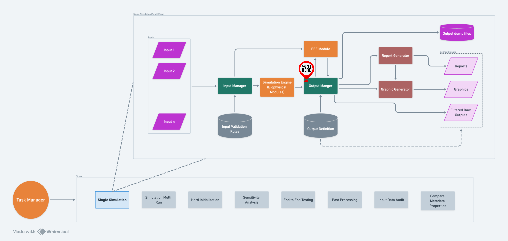

Output Manager#
Overview#
As its name suggests, it is in charge of managing the output. Output Manager collects variables, warnings, logs, and errors during the simulation (and other processes) and, as accurately as possible, documents the source and point in the code from which the data was generated. This will give developers and users more information about their model simulations as well as provide some flexibility for other uses down the road.
Output Manager works by collecting variables, logs, warnings, and errors
into separate pools, and populates requested output channels from the
pools once the simulation is done. This is done using filter files. If
a filter file’s name begins with either json_ or csv_, Output
Manager handles them itself. However, filter files whose names begin
with report_ and graph_ are handled by the Report Generator
and the Graph Generator
respectively.
Output Manager is a singleton, i.e., only one instance of it can exist (per application/memory segment). After the first instance is created, future calls to the constructor method return the first instance. Also, the initializer method only works once.
Quick Start#
To set up Output Manager to capture data from a RuFaS simulation:
See Add the data you need to the Output Manager variables pool for details.
Set up an output filter file to capture your data:
Create a .txt file in the output_filters folder (MASM/output/output_filters).
The name of the file should start with either
jsonorcsvdepending on which format you desire. Be specific with your naming (e.g.json_cow_lactation.txt).Add the text pattern(s) for the variables you want to capture. Output Manager uses RegEx pattern matching so for example if you want to capture all variables relating to the
Cowclass, you would enter^Cow.*into the filter .txt file you created.To capture all variables, you would enter
.*. For more details on how to write RegEx patterns to help capture the specific data you need, see the pattern matching section.
Run a simulation!
Chunkification#
Using chunkification, users can periodically dump the current variable pool and save a chunk into a JSON file. This will allow us to break down a larger simulation pool into smaller chunks. There are three main settings users can set in their task manager task to control how they would like to employ chunkification:
save_chunk_threshold_call_count: If this variable is specified, the OM will keep track of the number of calls to the OM.add_variable() function. Once it reaches the threshold number, the current variable pool will be dumped, and the other metrics will be ignored.maximum_memory_usage: Ifsave_chunk_threshold_call_countis not specified but this variable is, the OM will set OM.max_pool_size to the specified maximum_memory_usage amount.maximum_memory_usage_percent: If neither save_chunk_threshold_call_count nor maximum_memory_usage is specified, we will use maximum_memory_usage_percent to determine the maximum memory usage by simply multiplying it with the available memory.
For a more detailed look at chunkification, some example setups, and a diagram of how chunkification works, please see the Chunkification wiki page.
Output Filters#
Data collected by OutputManager can be filtered and handled by three main post-processing functions:
It can be aggregated by Report Generator.
It can be graphed in Graph Generator.
It can be filtered to a csv or json file right within OutputManager.
To route filtered data to any of these post-processors, you need to
create a filter file in .json format.
To graph your data, the filter file should start with
graph_.To aggregate your data, the filter file name should start with
report_.To simply filter the data to a .csv or .json file, the filter file name should start with
csv_orjson_respectively.
Typically naming the file after the data it is collecting is the best
practice (e.g. report_average_milk_production.json).
Within that filter file there are a number of options to specify what data you want and how you want it presented. Here is a list of filter options for GraphGenerator and ReportGenerator. More details are available in their respective Wiki pages.
Note: for filtering data using Output Manager, the only filter entries that have any effect are ``”name”``, ``”filters”``, ``”variables”``, and ``”filter_by_exclusion”``.
Output Filter Entry |
Data Type |
Default |
Graph Generator |
Report Generator |
Example Entry |
Required? (RG/GG/BOTH) |
|---|---|---|---|---|---|---|
name |
str |
N/A |
n/a |
The name of the report to appear in the column header of report CSV. |
|
OPTIONAL |
title |
str |
N/A |
The title of the graph. |
n/a |
“Gallons Milk Per Cow” |
No |
type |
str |
N/A |
The type of graph you want plotted. |
n/a |
“stackplot” |
GG |
filters |
list[str] |
N/A |
RegEx pattern that defines what vars will be plotted on a single graph. |
RegEx pattern that defines what vars will be in a report. |
|
GG, RG (if cross_references is not provided) |
variables |
list[str] |
N/A |
List of keys to be plotted when data from the filters pattern is stored in a dictionary. |
List of keys to be included in the report when the data from the filters pattern is stored in a dictionary. |
|
BOTH (when data in dictionary) |
filter_by_exclusion |
bool |
false |
A partner field to the variables field. This boolean allows the user to specify if they want to plot everything in the variables field or exclude what’s in the field. |
Similar to how it functions in GG, this specifies whether to include or exclude variables from the resulting CSV output. |
|
No |
use_name |
bool |
false |
Whether to use the filter name when constructing the key name for data pulled from a dictionary. |
Whether to use the filter name when constructing the key name for data pulled from a dictionary. |
|
No |
customization_details |
See GG Wiki |
N/A |
Customization options such as legends, titles, and more. |
N/A |
No |
|
legend |
list[str] |
N/A |
Legend is customizable. If left blank, the Graph Generator auto-generates a legend based on the keys of the data prepared to be plotted. |
N/A |
|
No |
use_calendar_dates |
bool |
false |
If true use dates/time as measurement on graph’s x-axis |
n/a |
|
No |
date_format |
string |
|
Specifies format of date/time along x-axis of graph |
n/a |
|
No |
display_units |
bool |
true |
Units measured during the simulation are automatically displayed in the graph legend. |
If true, units for aggregated report data will appear in the report title. |
|
No |
omit_legend_prefix/suffix |
bool |
false |
Allows removal of the prefix or suffix from a variable for display in the graph legend. Set “omit_legend_prefix”: true or “omit_legend_suffix”: true. |
N/A |
|
No |
expand_data |
bool |
false |
Graph filters support data expansion options: “expand_data”, “fill_value”, “use_fill_value_in_gaps”, and “use_fill_value_at_end”. Additionally supports “mask_values” to remove NaNs. |
Boolean flag to determine if data expansion should be attempted. Other options include “fill_value”, “use_fill_value_in_gaps”, and “use_fill_value_at_end”. |
|
No |
constants |
dict[str, float] |
N/A |
N/A |
These are values defined within the report that can be combined with variables in aggregation. |
|
No |
cross_references |
list[str] |
N/A |
N/A |
References the values generated in other reports for aggregation operations. |
|
No |
vertical_aggregation |
str |
N/A |
N/A |
Function used for aggregating data within each column. |
|
No |
horizontal_aggregation |
str |
N/A |
N/A |
Function used for aggregating data within each row. |
|
No |
horizontal_first |
bool |
false |
N/A |
Determines whether horizontal aggregation precedes vertical aggregation. |
|
No |
horizontal_order |
list[str] |
N/A |
N/A |
Specifies the order in horizontal aggregation. |
|
No |
slice_start |
int |
N/A |
N/A |
Index to start slicing data for the report. |
|
No |
slice_end |
int |
N/A |
N/A |
Index to end slicing data. |
|
No |
graph_details |
dict[str, str] |
N/A |
N/A |
Indicates report data should be graphed, must specify graph type (e.g., “plot”, “stackplot”). |
|
No |
graph_and_report |
bool |
false |
N/A |
Boolean flag to save report data requested for graphing to CSV. |
|
No |
simplify_units |
bool |
true |
N/A |
If false, complex units from aggregation won’t be simplified. |
|
No |
data_significant_digits |
int |
N/A |
# significant digits for graphed data. |
# significant digits for reported data. See further details in RG wiki. |
|
No - only occurs at post-processing stage. Will not cause values to be rounded during simulation. |
direction |
str |
“portrait” |
N/A |
The output CSV orientation. Either “portrait” or “landscape”. If no value is provided or providing an unexpected value, the default “portrait” direction will be used. |
|
No |
Data Origins#
When variables are added to the output manager, the Output Manager requires them to have an info map which tracks the class and function that is sending the data to output manager. Each biophysical modules reports its data to a respective reporter class to ensure that data from each daily update is added to Output Manager at the same time within a module. As you can hopefully see, this leads to obfuscation of the original class and function that altered, created, or updated the data.
There is a feature available to be able to track the original class and function that sent the data to its respective biophysical module reporter. This feature is called Data Origins. More details can be found here on the Data Origins Wiki Page.
Diagram#

A high-level flow of OM within RuFaS.#
Data Pools#
There are 4 main pools of data Output Manager collects:
Variables
Logs
Warnings
Errors
Variables are data calculated or changed as a result of the simulation running.
Logs are used to track events that occur during the simulation.
Warnings are messages issued in situations where it is useful to alert the user of some condition in the simulation where that condition arising doesn’t warrant terminating the simulation.
Errors are messages issued about a condition in the simulation where that condition arising is greatly impacting the result of the simulation but doesn’t necessarily warrant terminating the simulation or raising an exception.
For another way to think about logs, warnings, and errors:
Imagine you go to your car, open the door, get in, close the door, and start the engine. All of these are logs. Then you look at the dashboard to see there is a light on trying to draw your attention to the fact that you haven’t buckled your seat belt. This is a warning. Then you turn on the AC, sadly, it is not working. This is an error that goes to the errors pool because while there is a malfunction, it doesn’t stop you from getting to your destination. You start moving, your speed is variable. Then you get a flat tire, so you have to stop and fix it. This is an error that needs to be raised as an exception because it is not possible to move forward and you would not add it to the errors pool.
Writing Logs, Warnings, and Errors#
There are some best practices for writing logs, warnings, and errors in a way that is clear, actionable, and consistent. This section outlines different paradigms for naming and structuring messages, allowing flexibility based on the specific use case. The goal is to help users easily navigate the logs, identify issues, and take appropriate actions.
General Best Practices#
Clarity and Brevity: Keep messages concise but informative. Avoid being repetitive.
Context: Include the necessary details—what happened, where it happened, and why (especially for warnings and errors). All of this information need to be contained in both the name and message fields, as well as the info map.
Actionability: Ensure warnings and errors provide clear, actionable guidance when appropriate.
Naming and Structuring Messages#
There are two paradigms presented here for naming logs, warnings, and errors, with variations in their structure and level of detail. But these are by no means the only way to write log messages.
1. Consistent Naming with Varied Messages#
This approach uses a consistent name for logs, warnings, or errors originating from the same part of the system, while the message describes the specific event or issue.
Logs: This approach is particularly useful for logs, where it’s important to track the flow of actions in the same process. Logs will group under a single name, making it easy to follow a sequence of events.
Warnings: For warnings, consistent naming helps users monitor recurring issues in specific areas of the system. However, messages must be clear about the nature and impact of each warning.
Errors: For errors, this paradigm highlights where critical issues are occurring. Each error message should provide detailed information about the failure, but the consistent naming makes it easy to identify patterns.
Pros: Groups related messages together for easier navigation.
Cons: Users might need to read through multiple messages under the same name to find relevant details.
Examples
Logs:
{
"OutputManager.create_directory.Attempting to create a new directory.": {
"info_maps": [...],
"values": [
"Attempting to create a new directory at ..",
"Attempting to create a new directory at output/logs.",
"Attempting to create a new directory at output/reports.",
"Attempting to create a new directory at output/reports.",
"Attempting to create a new directory at output/reports.",
"Attempting to create a new directory at output/reports.",
"Attempting to create a new directory at output/reports.",
"Attempting to create a new directory at output/logs.",
"Attempting to create a new directory at output/logs."
]
},
}
Warnings:
{
"DataValidator._number_type_validator.Validation: value greater than maximum": {
"info_maps": [...],
"values": [
"Variable: 'NDICP.[92]' has value: 27.0, greater than maximum value: 12.00. Violates properties defined in metadata properties section 'NRC_Comp_properties'.",
"Variable: 'NDF.[21]' has value: 86.2, greater than maximum value: 85.00. Violates properties defined in metadata properties section 'NRC_Comp_properties'.",
"Variable: 'ADICP.[39]' has value: 9.275, greater than maximum value: 8.00. Violates properties defined in metadata properties section 'NASEM_Comp_properties'.",
"Variable: 'ADICP.[72]' has value: 8.306, greater than maximum value: 8.00. Violates properties defined in metadata properties section 'NASEM_Comp_properties'.",
"Variable: 'NDICP.[39]' has value: 12.695, greater than maximum value: 12.00. Violates properties defined in metadata properties section 'NASEM_Comp_properties'.",
"Variable: 'NDICP.[66]' has value: 30.34, greater than maximum value: 12.00. Violates properties defined in metadata properties section 'NASEM_Comp_properties'.",
"Variable: 'NDICP.[72]' has value: 16.169, greater than maximum value: 12.00. Violates properties defined in metadata properties section 'NASEM_Comp_properties'."
]
},
}
Errors:
{
"ReportGenerator.generate_report.report_generation_error": {
"info_maps": [...],
"values": [
"Error generating report (Homegrown Feed Emissions) => ValueError: filter ['.*homegrown_.*_emissions.*'] in Homegrown Feed Emissions led to empty report data.",
"Error generating report (Not a filter) => ValueError: filter ['Not.present.*'] in Not a filter led to empty report data."
]
}
}
2. Cause-Effect (or Action-Outcome) Pattern#
This paradigm focuses on using the name to describe the cause of the log, warning, or error, and the message to describe the outcome or action taken.
Logs: In logs, this approach helps clarify what action was taken and what result it produced. It can be useful when you need to focus on specific actions and outcomes rather than grouping all logs from a particular area.
Warnings: For warnings, the name should describe the condition that triggered the warning, while the message outlines what was done (or needs to be done) in response. This structure makes it easy to understand what caused the warning and its potential impact.
Errors: In errors, the cause-effect pattern provides a clear description of the problem and what needs to be done to resolve it. This is especially helpful in critical situations where immediate action is required.
Pros: Provides clarity by directly linking cause and effect, making it easier for users to understand and respond.
Cons: Related issues may be dispersed across different categories, making it harder to track patterns over time.
Examples
Logs:
{
"InputManager._load_metadata.load_metadata_attempt": {
"info_maps": [...],
"values": [
"Attempting to load metadata from input/metadata/default_metadata.json."
]
},
"InputManager._load_metadata.load_metadata_success": {
"info_maps": [...],
"values": [
"Successfully loaded metadata from input/metadata/default_metadata.json"
]
}
}
Warnings:
{
"PurchasedFeedEmissionsEstimator.create_daily_purchased_feed_emissions_report.Missing Purchased Feed Emissions": {
"info_maps": [...],
"values": [
"Missing data for RuFaS feed 216, omitting from purchased feed emissions estimation.",
"Missing data for RuFaS feed 176, omitting from purchased feed emissions estimation."
]
},
"PurchasedFeedEmissionsEstimator.create_daily_land_use_change_feed_emissions_report.Missing Land Use Change Purchased Feed Emissions": {
"info_maps": [...],
"values": [
"Missing data for RuFaS feed 216, omitting from land use change purchased feed emissions estimation.",
"Missing data for RuFaS feed 176, omitting from land use change purchased feed emissions estimation."
]
}
}
Choosing the Right Approach#
Logs: Use consistent naming when you want to group related events from the same process. Use cause-effect when you want to highlight specific actions and their results.
Warnings: If you expect recurring issues from a particular area, consistent naming helps to monitor them. Use cause-effect when you need to focus on the condition that triggered the warning and how the system is responding.
Errors: Consistent naming is useful when tracking failures in a specific process. Use cause-effect to make it clear what went wrong and what action should be taken.
Summary of Pros and Cons#
Paradigm |
Pros |
Cons |
|---|---|---|
Consistent Naming |
Easy to group related messages. |
Users may need to sift through multiple messages. |
Cause-Effect (Action-Outcome) |
Clear description of cause and outcome. |
Similar issues may be scattered, making pattern identification harder. |
Info Maps#
Filling in the info maps with the context included in the name and title makes logs, warnings, and errors easier to process on a large scale i.e., querying logs stored in a database and processed by a script.
Naming Conventions#
By following patterns for the names of warnings and errors, maintainers of RuFaS will be able to automate some parts of their processing and analysis. This will be helpful when there are very high volumes of warnings and errors, and manually checking them would be too time consuming.
To keep the “name” field of warnings and errors in RuFaS consistent, stick to the following rule of thumb:
Whatever problem is causing the warning or error to be logged, figure out which Python Exception it would be raised as.
Remove the “Error” from the name of that exception.
Prepend the shortened exception and “:” to the logged name.
For example, a key that is expected to be a dictionary is not there. If
this were an uncaught exception, it would be raised as a KeyError.
So when if the name of the error that is being logged instead is
“Missing xyz information from abc data”, the name would be rewritten as
“Key: Missing xyz information from abc data”.
What NOT To Do#
Never leave the name or message of a log, warning, or error blank! There should always be a name and message, no matter how unnecessary it may seem.
Don’t add errors to the Output Manager in places other than where the error was discovered (except in cases where this is absolutely necessary). Doing so makes the code more convoluted and harder to work with.
Adding Data to the Output Manager#
To use the Output Manager to collect variables, logs, warnings, or errors throughout the model:
Import the Output Manager class into the Python file you are working in. The best practice is to organize this statement alphabetically at the top of the file.
Instantiate Output Manager - most of the time within the init of the class so it’s available for all functions in the class. This should only need to be done once in each particular program file. Because Output Manager is a singleton, you can instantiate it anew once in each program file and it will always refer back to the same Output Manager. Therefore you do not need to import it between different program files.
Next initialize one of the main parameters required by an entry into each of the Output Manager pools: the info_map. (More on info_maps below)
Avoid entering hard-coded values to the info_map and Output Manager pools.
Use the appropriate Output Manager method to add the variable, log, warning, or error along with its info_map.
Info_maps#
The Info_map requires you to send both the caller class* and the caller function i.e. wherever you are in a particular program file. It can take additional optional contextual variables that might be helpful in figuring out the state of the model and class at the moment something was added to one of the Output Manager pools. So you will need to create a new instance of info_map within each method/function it is needed in within each class.
* While many of the functions within the RuFaS model are organized into classes, there remain some functions within the codebase that are not. In the case where data needs to be added to the Output Manager from a function that is not currently associated with a class, the caller class, in this case, can be entered into the info_map as “no_caller_class”.
An info_map is meant to capture environment variables to have reproducible results, warnings, and errors. Adding the caller class and caller function is the bare minimum.
HOWEVER
Info_maps are added to the associated pool at every instance during the simulation. Many variables are added on a daily basis so please carefully consider the data you are adding to the info_map because the size of the Output Manager files can grow unmanageably large over longer simulations if large data structures are added frequently.
Info_map best practices:
Be mindful of the frequency with which the function in which you are adding the data to the Output Manager is called. If it is a function that is called daily, look closely at the data you are adding at both the info_maps level and the variable/warning/error/log itself.
Be cautious to add larger data structures such as objects to the info_maps (or directly to the pools). Instead look to extract specific pieces of data you believe would be helpful as contextual data for what you are adding to the Output Manager pools.
Be considerate - each piece of data added to the Output Manager will be collected for every simulation run by everyone who runs the model. Info_maps can be intentionally excluded from the Output Manager pools but we want to leave the option for people to run the simulation with info_maps included.